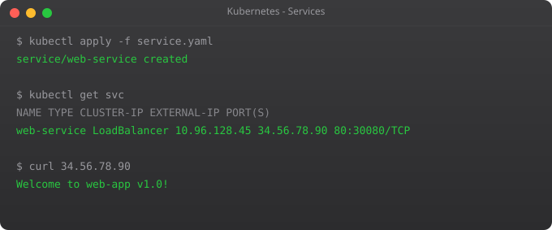

Pods get IP addresses, but those addresses change every time a pod restarts. Services provide a stable address that routes traffic to healthy pods.
ClusterIP gives an internal IP only reachable within the cluster. NodePort opens a port on every node. LoadBalancer provisions a cloud load balancer for external traffic.
apiVersion: v1
kind: Service
metadata:
name: web-service
spec:
type: LoadBalancer
selector:
app: web
ports:
- port: 80
targetPort: 8080The selector matches pods with the label app: web. Add more pods — the service includes them automatically. Kubernetes also runs internal DNS, so any pod can reach this service at web-service.default.svc.cluster.local.
In Part 5, we cover ConfigMaps and Secrets for managing application configuration.
← Back to Blog